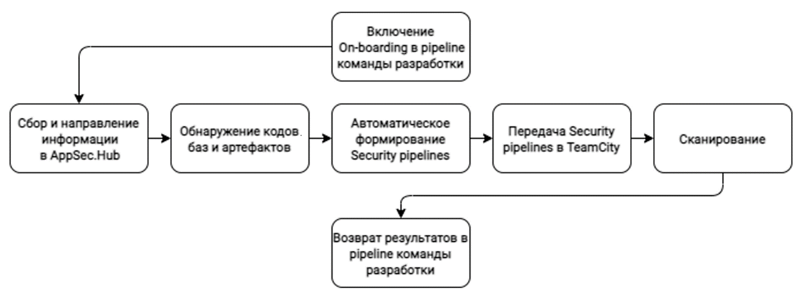
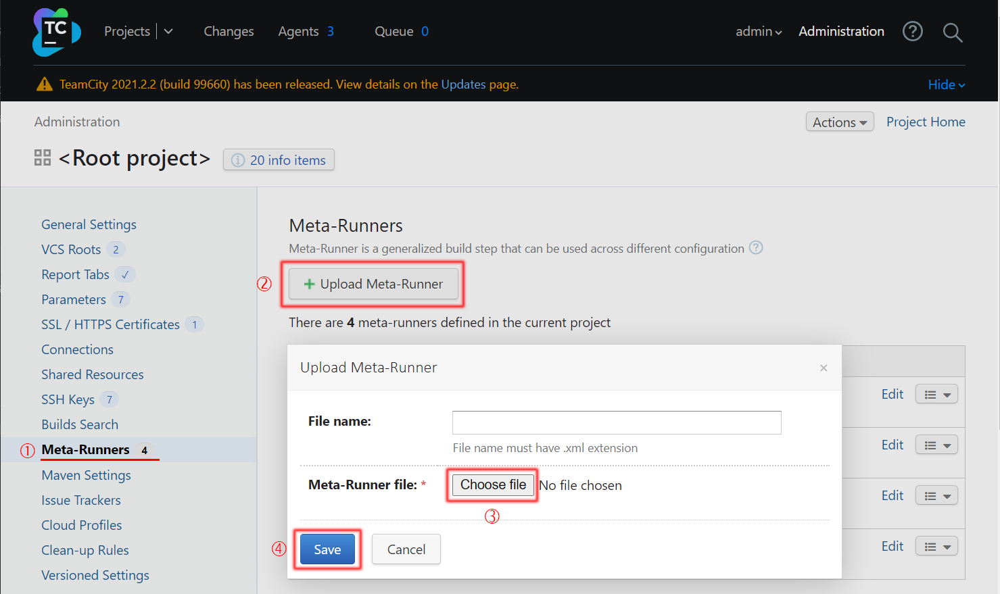
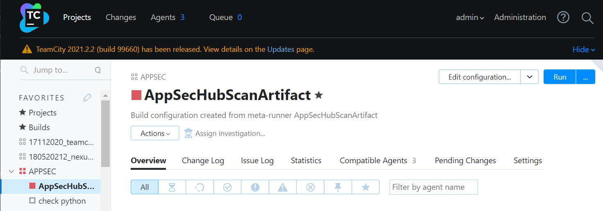
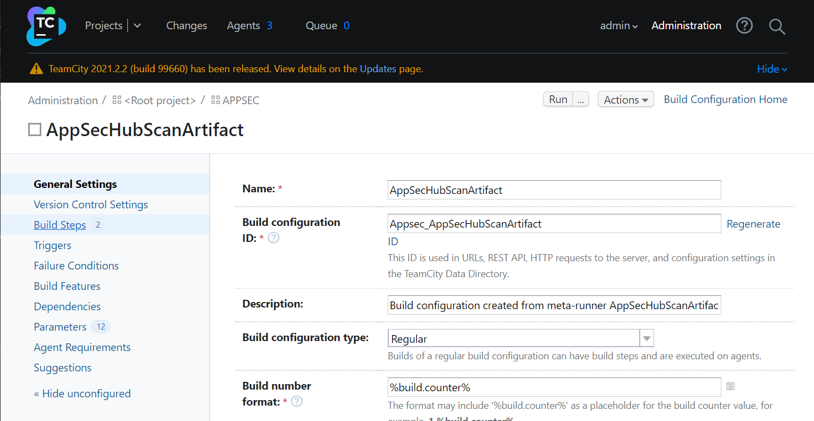
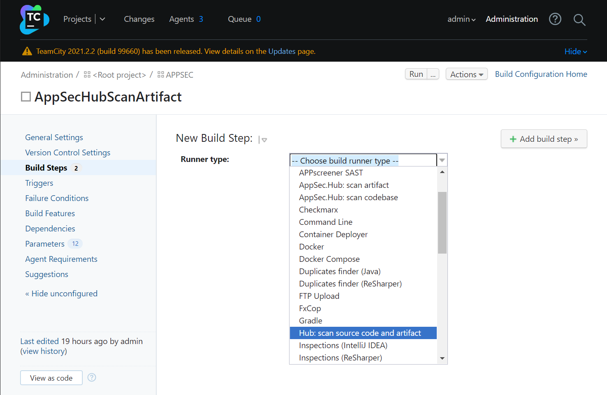
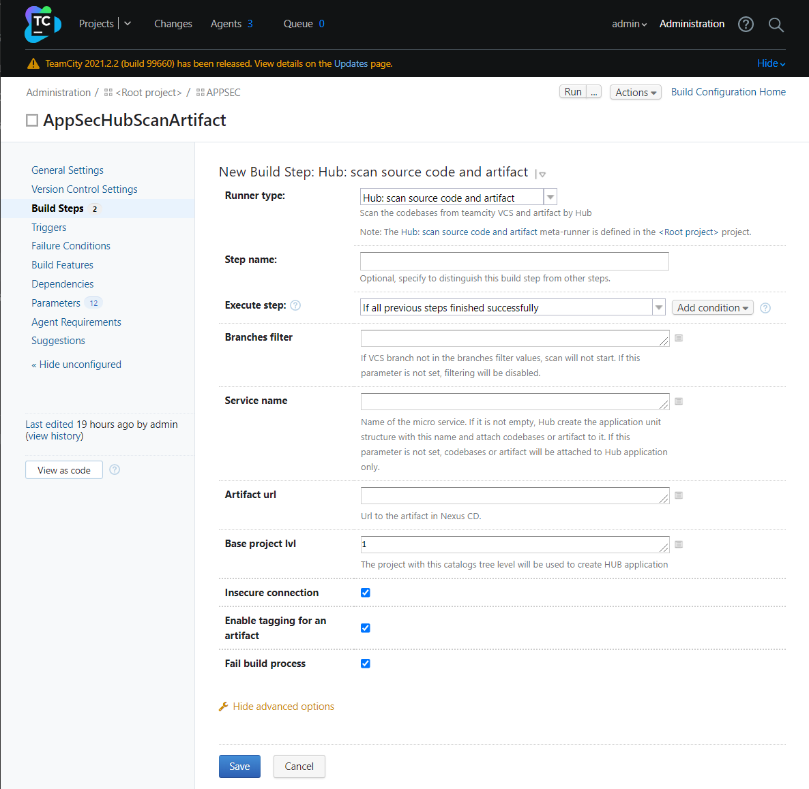
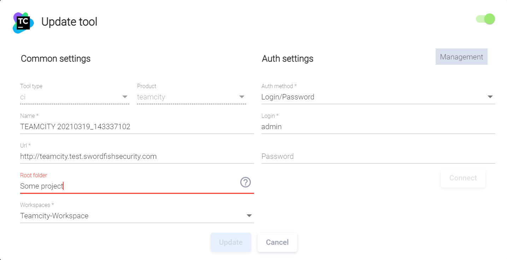
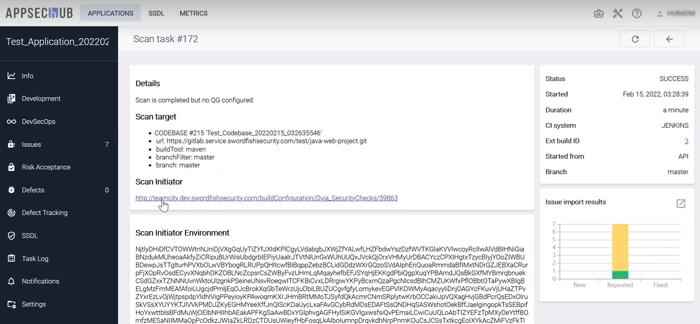
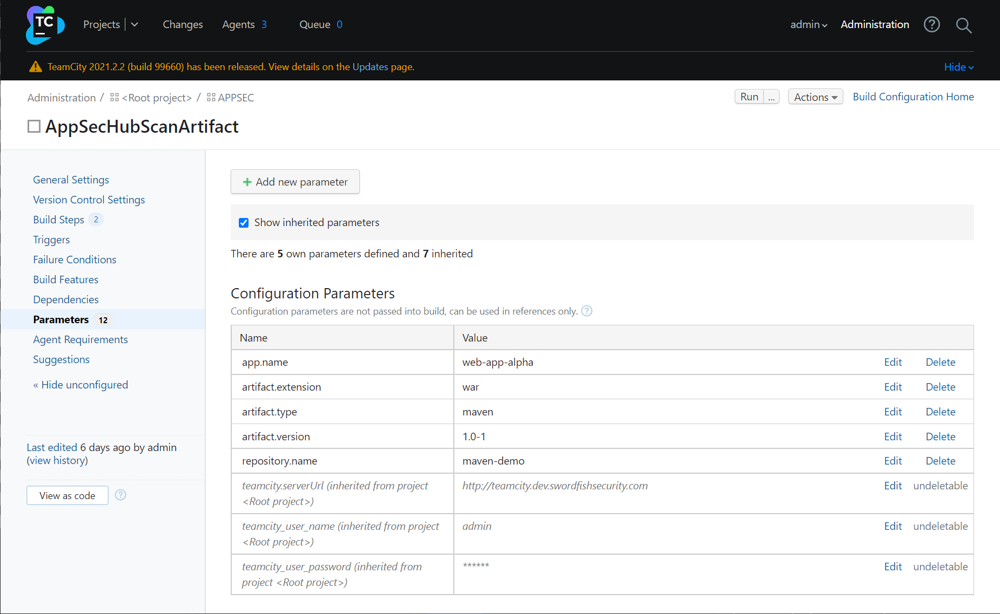

On-boarding — автоматизация интеграции AppSec.Hub в цикл разработки
Понятие On-boarding
В AppSec.Hub реализованы механизмы, позволяющие автоматизировать и, соответственно, значительно упростить и ускорить процесс интеграции системы в единый цикл разработки программного обеспечения, а значит в целом облегчить контроль безопасности разрабатываемого программного обеспечения. В ходе данного процесса происходит добавление в AppSec.Hub информации о кодовых базах, артефактах, релизных объектах и т. д., формируются соответствующие Security Pipelines, запускаются сканирования и при необходимости инициируется обмен данными, например результатами сканирования, с другими инструментами и все эти операции выполняются в автоматическом режиме. Для определения данного процесса будем использовать термин on-boarding.
Другими словами, on-boarding — это быстрый и эффективный способ, позволяющий DevOps-команде оперативно и с наименьшими затратами пересмотреть существующие рабочие процессы в пользу дальнейшей разработки программного обеспечения в парадигме DevSecOps. А разработчики, уже использующие DevSecOps практики, получают мощный инструмент, позволяющий радикально сократить объем выполняемых «вручную» рутинных операций и, тем самым, повысить эффективность производственных процессов.
Переходя в практическую плоскость, отметим, что on-boarding в AppSec.Hub реализован с помощью скриптов, запускаемых с набором определенных параметров в CLI (Command Line Interface). По существу, такой подход реализует упрощенный способ взаимодействия с REST API системы.
Для сканирования кодовых баз и артефактов используются соответственно два скрипта: scan_codebase.py и scan_artifact.py, см. таблицу ниже. Скрипты написаны на Python 3.7 и взаимодействуют с бэкендом AppSec.Hub с использованием протокола HTTP. Описание параметров скриптов и примеры их использования для сканирования кодовых баз и различных типов артефактов приведены в Приложениях 1 и 2 соответственно.
| Скрипт | Описание |
|---|---|
| scan_codebase.py | Сканирование кодовых баз |
| scan_artifact.py | Сканирование артефактов |
В качестве примера поэтапно рассмотрим типовой процесс сканирования кодовой базы.
py scan_codebase.py --url http://hub.dev.swordfishsecurity.com/ \
--token ***** \
--appcode 09022021_cli \
--branch master \
--codebase-url http://gitlab.service.yourcompany.com/test/java-web-project.git
- AppSec.Hub находит приложение, код которого передан с помощью параметра
––appcode, в противном случае создает новое. - AppSec.Hub находит кодовую базу, определенную параметрами
--codebase-urlи--branch, в противном случае создает новую. - AppSec.Hub находит Security Pipeline для анализа кодовой базы. Если Security Pipeline обнаружен, AppSec.Hub запускает его, в противном случае на основе подходящего шаблона (см. раздел «Security Pipelines») создается новый Security Pipeline и запускается сканирование. Если подходящий шаблон не найден, генерируется сообщение об ошибке, см. раздел «Приложение 3. Результаты сканирования». В таком случае следует создать соответствующий шаблон Security Pipeline, в пользовательском интерфейсе AppSec.Hub, см. раздел «Security Pipelines».
- После завершения сканирования осуществляется возврат результатов с учетом Quality Gate (см. раздел «Security Pipelines») и в CLI отображается ссылка на результаты сканирования. После перехода по ссылке (требуется предварительная авторизация в AppSec.Hub), можно просмотреть перечень обнаруженных в ходе сканирования Security Issues. Эта функциональность позволяет быстро ознакомиться с проблемами безопасности, выявленными в ходе соответствующего сканирования. Кроме этого, результаты сканирования могут быть сохранены в текстовый файл, который содержит информацию о статусе сканирования и причине его присвоения, использовавшихся при этом практиках и т. д.
Кроме этого, реализован механизм взаимодействия, позволяющий через REST API выполнить импорт результатов сканирования из различных AST инструментов (Checkmarx, Nexus IQ). Такой подход особенной удобен, когда в компании уже выстроен процесс разработки с использованием тех или иных инструментов и стоит задача передачи всех этих данных в AppSec.Hub. При этом нет необходимости запускать сканирование, как в приведенном выше примере. В результате на стороне AppSec.Hub создаются все необходимые объекты и связи: приложения, кодовые базы, Security Pipelines, а также запускается импорт уязвимостей и проверяется соответствие QG.
Для импорта результатов используется скрипт import_results.py. Описание параметров запуска скрипта приведено в разделе «Приложение 1. Описание параметров запуска скриптов on-boarding».
Особенности интеграции с использованием TeamCity
Благодаря предлагаемой инструментом оркестрации TeamCity функциональности Meta-Runner появилась возможность еще больше сократить участие человека в процессе интеграции и снизить объем выполняемых «вручную» операций.
Meta-Runner — специально разработанный конфигурационный файл, позволяющий автоматизировать процесс настройки TeamCity с учетом специфических требований интеграции с AppSec.Hub. При этом активно используются шаблоны, автоматическое распознавание кодовых баз и артефактов по URL и т. д.
Упрощенно графически типовая интеграция AppSec.Hub в процесс разработки с использованием Meta-runner может быть представлена следующим образом.

Настройка Meta-Runner
В комплект поставки AppSec.Hub входят следующие конфигурационные файлы Meta-Runner.
| Название конфигурационного файла | Назначение | Используемые скрипты |
|---|---|---|
| scan-codebase-metarunner.xml | для работы только с кодовыми базами | scan_codebase.py |
| scan-artifact-metarunner.xml | для работы только с артефактами | scan_artifact.py |
| scan-codebase-or-artifact-metarunner.xml | для работы как с кодовыми базами, так и с артефактами | scan_codebase.py и scan_artifact.py |
Конфигурационный файл определят вид диалогового окна, используя которое пользователь TeamCity получает возможность сформировать соответствующий Build Step и передать в сканирующие скрипты всю необходимую информацию, а также содержит исполняемый код, обеспечивающий взаимодействие сканирующих скриптов с API TeamCity и AppSec.Hub.
Загрузка конфигурационного файла Meta-Runner в TeamCity
Находясь в корневой папке TeamCity, перейдите на страницу Meta-Runners. Нажмите кнопку +Upload Meta-Runner, выберите необходимый конфигурационный файл с расширением xml, при необходимости измените имя файла и нажмите кнопку Save.

Конфигурационный файл будет загружен в корневой проект TeamCity и, соответственно, будет доступен для всех остальных проектов более низкого уровня, в которых, в свою очередь, он может быть добавлен в качестве одного из этапов пайплайна (Build Step) TeamCity.
Добавление Build Step в TeamCity
Чтобы добавить загруженный нами конфигурационный файл в качестве одного из этапов пайплайна (Build Step) в TeamCity, необходимо:
Выбрать проект и нажать кнопку Edit configuration, расположенную в правом верхнем углу интерфейса пользователя.

Выбрать пункт меню Build Steps слева.

Нажать кнопку +Add build step и в раскрывающемся меню выбрать название загруженного ранее конфигурационного файла Meta-Runner.

Поля страницы New Build Step заполняются с учетом специфических проектных требований.

- Step name — наименование этапа пайплайна (Build Step), например, AppSec.Hub Meta-Runner.
- Branches filter — фильтр кодовых ветвей репозитория для сканирования. Фильтр применяется как к основной, так и к дополнительным кодовым базам. Если значение не указано, будут сканироваться все ветви кодовой базы (фильтрация отсутствует).
- Service name — устанавливает соответствие между кодовой базой/артефактом и структурной единицей приложения (Structure unit). Если указанный Structure unit отсутствует в AppSec.Hub, он создается.
- Artifact url — URL артефакта, хранящегося в Nexus RM или файловом хранилище. Если данный параметр отсутствует, сканирование запущено не будет. Здесь можно указать несколько URL артефактов через перевод строки.
- Base project lvl — вложенность приложения относительно корневой папки. Если при интеграции/настройке TeamCity c AppSec.Hub, в качестве параметра Root folder был указан какой-либо проект, то отчет вложенности ведется от него.

- Insecure connection — если выбрана данная опция, ошибки HTTPS игнорируются.
- Release object url — Если в этом поле указан URL релизного объекта, этот релизный объект может быть протегирован в зависимости от настройки в security pipeline (см. детали в разделе «Тегирование релизных объектов»).
- Fail build process — если данная опция выбрана, ошибки сканирования игнорируются.
После завершения конфигурирования Build Step нажмите кнопку Save.
Кроме описанных выше параметров в скрипты scan_codebase.py и scan_artifact.py могут передаваться другие, например:
--scan-initiator — информация об инициаторе сканирования (например, ссылка на задачу TeamCity);
--scan-initiator-environment — среда окружения инициатора сканирования.
Передаваемая с их помощью информация отображается в соответствующих полях страницы с подробной информацией о задаче сканирования, а также ассоциируется с обнаруженными в ходе него проблемами безопасности.

В свою очередь, созданные из таких проблем безопасности дефекты также наследуют указанную информацию, что в результате последующей синхронизации делает возможным ее передачу в проектную систему отслеживания дефектов.
Чтобы обеспечить возможность синхронизации, необходимо настроить соответствие полей в проектной системе отслеживания дефектов, см. раздел «Синхронизация с Jira — настройки».
Примечание
При каждой последующей синхронизации дефектов соответствующая информация в проектной системе отслеживания дефектов обновляется.
Определение конфигурационных параметров и переменных среды
Кроме этого, для нормального функционирования Meta-runner необходимо указать некоторые общие конфигурационные параметры и переменные среды на странице Parameters. Если данные параметры и переменные не наследуются из корневого проекта, необходимо их добавить.

Необходимые конфигурационные параметры
| Параметр | Описание | Значение |
|---|---|---|
| teamcity.serverUrl | URL TeamCity | http://teamcity.dev.swordfishsecurity.com |
| teamcity_user_name | Имя пользователя TeamCity | admin |
| teamcity_user_password | Пароль | ** |
Необходимые переменные среды
| Параметр | Описание | Значение |
|---|---|---|
| env.HUB_URL | URL AppSec.Hub | https://hub.dev.swordfishsecurity.com |
| env.NEXUS_URL | URL Nexus | https://nexus.dev.swordfishsecurity.com |
| env.TOKEN | Токен | ** |
On-boarding и сканирование
После запуска пайплайна в TeamCity, когда очередь доходит до созданного нами этапа, происходит следующая последовательность действий:
- Обнаруживается кодовая база/артефакт.
- Выполняется ряд подготовительных и контрольных операций.
- Создаются виртуальные переменные, обеспечивающие возможность работы без доступа в Интернет.
- Подключаются необходимые библиотеки.
- Далее, на основе собранных данных, происходит запуск скриптов scan_codebase.py и/или scan_artifact.py, которые, в свою очередь, создают в AppSec.Hub необходимые Security Pipelines, запускают сканирования соответствующих кодовых баз и артефактов с использованием выбранных инструментов, сохраняют и возвращают результаты сканирований.
При отсутствии ошибок процесс завершается с кодом выхода «0».
Коды ошибок, которые могут появляться при работе Meta-runner, приведены в разделе «Приложение 4. Коды выхода Meta-runner».